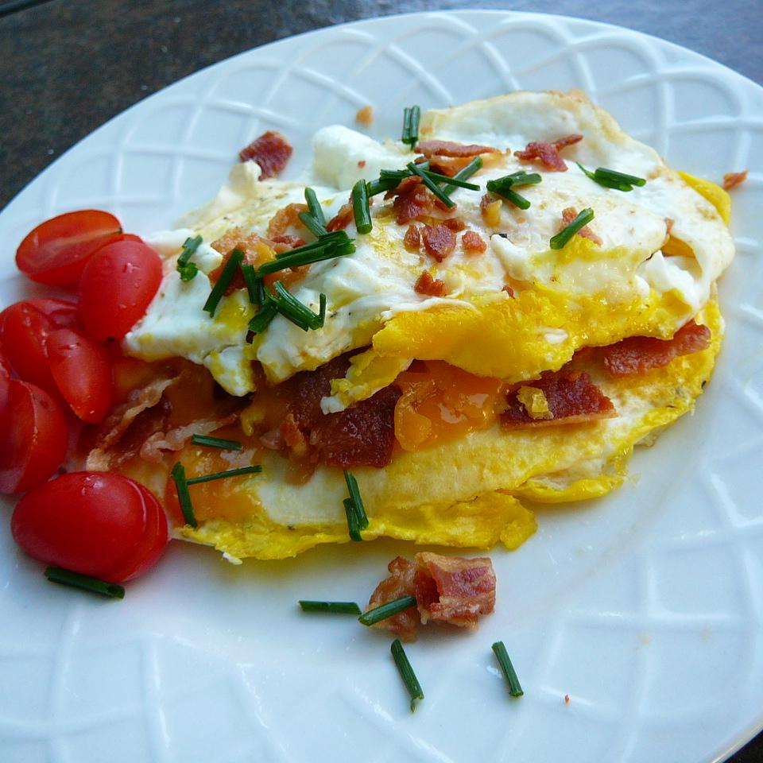

Breadless Fried Egg Sandwich

Description
Crispy bacon and Cheddar cheese are stuffed between 2 fried eggs in this recipe. So simple and delicious!
Ingredients
- 3 slices bacon
- cooking spray
- 2 eggs
- salt and ground black pepper to taste
- ⅓ cup shredded Cheddar cheese
Steps
- Place bacon slices in a large skillet and cook over medium-high heat, turning occasionally, until evenly browned, about 10 minutes. Drain slices on paper towels. Crumble into pieces and set aside.
- Spray another skillet with cooking spray and heat over medium-low heat. Crack eggs side by side into the skillet; season with salt and black pepper. Cook until egg whites are set and firm, 3 to 4 minutes. Flip eggs. Sprinkle bacon pieces and Cheddar cheese over one egg. Continue cooking to desired doneness and cheese is melted, 3 to 4 minutes more. Place second egg on top. Transfer to serving dish.
Return to main page